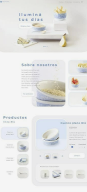

AI
한국경제AI교육
PORTFOLIO
메뉴
기사
이미지
영상
Final project
02 · Image
Visual
Notes.
색, 형태, 질감을 조합하며 아이디어가 이미지가 되는 순간을 수집했습니다.
Wild Flower — 그래픽 포스터
AI IMAGE / 2026

Soft Object — 에디토리얼 실험
ART DIRECTION
상상을
보이는 것으로.
Blue Statement — 타이포그래피
TYPE STUDY
Data to Story — 정보 디자인
EDITORIAL